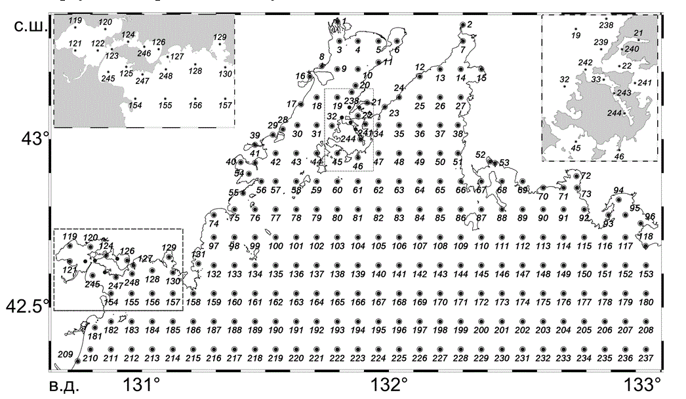

Залив Петра Великого (ЗПВ), расположенный в северо-западной части Японского моря, является самой богатой по видовому и таксономическому разнообразию акваторией Российской Федерации, где льдом покрывается около 42% его площади, а продолжительность ледового периода составляет около 120 дн. Реализация планов развития Дальнего Востока, в том числе нефтегазового комплекса, во много раз увеличит антропогенную нагрузку на экологию ЗПВ. Для успешного сохранения и рационального использования уникальных биологических и водных ресурсов залива в условиях интенсивного развития хозяйственной деятельности необходимо располагать всесторонними и надёжными сведениями о важнейших абиотических факторах, определяющих состояние и функционирование прибрежных экосистем. Речь идёт в первую очередь о наличии сезонного ледяного покрова, обуславливающего ряд особенностей гидрометеорологического режима, учет которых необходим для эффективного развития региона.
Интерес к анализу эволюции ледовых условий подчеркивается еще и широко обсуждаемым вопросом об изменении климата. Учитывая, что ледяной покров является наиболее инерционным объектом – неким индикатором, отражающим влияние значительного комплекса гидрометеорологических факторов, то пристальное внимание к эволюции ледовых условий региона, особенно их многолетней изменчивости и пространственным особенностям, становится весьма понятным.
К настоящему времени собран обширный материал, касающийся ледяного покрова Японского моря вообще и залива Петра Великого в частности. Общее описание ледового режима дано достаточно подробно в работах [1, 7-10, 17-22]. Характер многолетней пространственно-временной изменчивости и тенденции в эволюции ледяного покрова залива представлены в [8, 11-12, 18, 23]. Эти исследования стали возможными за счет использования разноплановой информации о ледяном покрове и комплексе определяющих его эволюцию факторов, скорректированных и сформированных в единую базу данных.
1 Данные и методы
Наблюдения за льдом в заливе Петра Великого начали проводиться, с конца XIX века, однако, сведения о состоянии ледяного покрова залива, пригодные для последующего обобщения и анализа, начали поступать только с 1917 года. Историческая база ледовых наблюдений (БД) залива Петра Великого представляет собой непрерывный ряд значений ледовитости (площади моря, покрытой льдом любой сплочённости) за период с 1917 г. по настоящее время, а также неравномерные временные ряды двумерных полей ледовых характеристик: сплочённости ледяного покрова, возраста и формы льда.
Исходной информацией при создании исторической базы послужили:
-карты ледовых разведок, а начиная с 50-х годов XX века, ледовых авиаразведок акваторий дальневосточных морей;
-спутниковые изображения ледяного покрова морей, принятые с метеорологических искусственных спутников Земли серий NOАA, Метеор, Космос и др., начиная с 1990 года;
-гидрометеорологические ежемесячники (ежегодники) по дальневосточному региону, содержащие данные прибрежных гидрометеорологических станций и постов за период с 1917 года по настоящее время.
Вся имеющаяся информация о состоянии ледяного покрова, получаемая в течение определенной декады, картировалась и подвергалась предварительному анализу. Основой при выборке исходных данных о ледовом состоянии залива до 1956 года служили данные гидрометеостанций и постов, ледовых разведок, а также попутные судовые наблюдения; с 1959 года и до 1990 года - данные ледовых авиаразведок проводимых в течение данной декады, а после 1990 года - наблюдения из космоса.
По средним декадным картам ледовых условий определялись значения ледовитостей (площадь моря покрытая льдом), фиксировалось положение кромки льда, выделялись области с заданными ледовыми условиями и при необходимости подсчитывались их площади, снимались значения различных ледовых характеристик (сплоченность, возраст, формы льда). Для численного представления полей ледовых характеристик акватория залива разбивалась на ряд сравнительно однородных районов (244 района) с максимальной площадью 63,24 км2 (рисунок 1). Отношение площади каждого элементарного района к площади максимального определено как «Вес», данного района. Вблизи берегов районы формировались в зависимости от конфигурации береговой линии и практической целесообразности. В местах резкой смены ледовых характеристик площади элементарных районов уменьшались. Ледовитость оценивалась в процентах от площади залива, а сплоченность льда - в баллах (от 0 до 10).

Рисунок 1 - Схема разбиения акватории при создании базы ледовых характеристик зал. Петра Великого
Учитывая высокую степень точности определения местоположения самолета при производстве авиаразведок, следовательно, и точность фиксирования ледовых условий, а при отсутствии авиаразведок, достаточную точность привязки и дешифровки спутниковых данных, можно полагать, что возможные ошибки представления положения кромки льда, а, следовательно, вычисляемых значений ледовитости много меньше среднеквадратического отклонения этих величин.
Сравнение ледовитостей акваторий рассчитанных по различным источникам информации (спутниковые данные и данные ледовых авиаразведок) показали высокую адекватность сведений о состоянии льда в заливе. Коэффициенты корреляции между разноплановыми (по источникам информации) данным, как правило, превышали 0,8 [11]. Поэтому, можно предположить, что суммарная ошибка представления ледовитости составляет не более 10-15%, а ошибки фиксирования ледовых характеристик не превышают одного балла.
Восстановление полных баз данных. Накопленная к настоящему времени ледовая информация (ледовые разведки, спутниковые снимки и т.д.) отличается исходной неполнотой, как в пространстве, так и во времени. Это связано с погодными условиями при визуальном фиксировании состояния ледяного покрова, нерегулярностью разведок, трудностью определения отдельных ледовых элементов и т.д. Таким образом, практически, нет ни одного периода с полным набором всех элементов, достаточно характеризующих состояние ледяного покрова.
Сложившаяся ситуация с исходным дефицитом натурных данных существенно затрудняет любые исследования, связанные с учетом ледовых условий и их пространственно-временной изменчивости на акватории залива Петра Великого.
Поэтому остро встает вопрос формирования полных архивов ледовой информации, восстановленных с учетом имеющихся представлений о существующей пространственно-временной структуре ледовых характеристик.
Для реализации этой задачи использовался комплекс методов многомерной статистики [9, 18].
При этом задача разбивалась на два этапа.
На первом этапе восстановлению подвергались ряды средних декадных значений ледовитостей. В исходном информационном массиве преимущественно фиксировались отдельные или групповые пропуски наблюдений в течение ледового периода. В некоторых случаях отмечалось полное отсутствие сведений о состоянии ледяного покрова залива в течение всего года. Однако подобные ситуации оказались достаточно редки и отмечены только в 7 случаях. Это 1919, 1921, 1923-1924 и 1942-1944 год.
Отдельные пропуски в течение ледового сезона восстанавливались методами аналогов и корреляционно-регрессионного анализа [9, 18]. Отбирались года аналоги, оценивались связи и строились уравнения регрессии между декадными значениями ледовитостей внутри ледового периода. Кроме того, для оценки состояния ледяного покрова использовался архив температур воздуха по четырем станциям расположенным на побережье залива (Владивосток, Находка, Гамов и Посьет) за период с 1918 г. по 2004 г. (Данные о температуре воздуха были извлечены из климатического архива ДВНИГМИ именно для решения задачи восстановления состояний ледяного покрова).
Если пропуски распространялись на весь ледовый сезон, то использовался метод восстановления основанный на разложении в ряд Фурье, с заранее рассчитанными гармониками [9]. Корректировки восстановленных величин ледовитостей также проводились с учетом термического фона года.
Принимая во внимание комплексность подхода к задаче восстановления пропущенных значений и тщательность расчетов можно полагать, что возможные ошибки диагноза ледовитостей залива ненамного превышают ошибки представления исходных данных (10-15%).
На втором этапе восстанавливались среднедекадные поля сплоченности льда представленными по 244 элементарным районам.
Кроме отмеченных методов (первый этап), восстановление многомерных распределений (полей) ледовых характеристик (сплоченность льда) при наличии пропусков, проводилось методами оптимизации, где в качестве параметров использовались эмпирические ортогональные функции (ЭОФ) разложения полей сплоченности льда (в дальнейшем также возраста и форм льда). При этом выделение отдельных составляющих изменчивости и оценка их весов базируется на учете статистической структуры самих исходных полей, то есть анализируются взаимосвязи всех точек поля (разложение проводится по корреляционной или ковариационной матрице). Однако, имеющиеся пропуски данных в архивах ледовой информации, делают невозможным эффективную реализацию данного метода. В связи с этим возникает проблема: как провести разложение исходных полей по ЭОФ с одновременным восстановлением пропущенных значений, без или с минимальным искажением истинной статистической структуры анализируемых полей. В подобном случае для решения поставленных задач наиболее рациональным подходом, по-видимому, является использование методов оптимизации, основанных на итерационных схемах расчета. Достоинством этих схем являются: универсальность относительно широкого класса задач, простота вычислительного процесса, малое количество промежуточных данных, устойчивость к ошибкам округления и т.д. При восстановлении многомерных полей ледовых характеристик использовался именно такой подход [9]. Однако множественность пропусков (количество пропущенных декад * размерность поля (244)) делает невозможным прямую реализацию отмеченных методов полного восстановления многомерных полей. Поэтому, для адекватной оценки пространственной структуры сплоченности льда восстанавливались только поля, имеющие ограниченное количество пропусков.
Последовательно выполненный комплекс статистических процедур по восстановлению пропущенных данных позволил в первом приближение сформировать:
- непрерывный (полный) архив информации об общем состояние ледяного покрова (ледовитости) в заливе Петра Великого за период с 1917 по 2012 гг.;
- восстановленный архив полей сплоченности льда за 30 наиболее обеспеченных данными лет. В годы, с недостаточным (нет информации более чем на половине площади залива) или полным отсутствием информации о состоянии ледяного покрова по акватории залива, полностью восстановить распределения сплоченности еще не удалось. Однако даже частично восстановленный архив сплоченности льда позволил получить статистически обеспеченные оценки и провести анализ пространственной структуры изменчивости ледяного покрова в заливе.
Естественно, по мере накопления дополнительной информации и совершенствования вычислительных технологий, восстановленные данные будут уточняться и расширяться.
3 Общая характеристика ледового режима залива Петра Великого
По многолетним данным продолжительность периода со льдом в заливе Петра Великого составляет около 120 дней. В среднем льдом покрывается примерно 42% его акватории. Ледяной покров наблюдается с ноября по апрель и в суровые зимы положение кромки льда почти совпадает с границей залива. Максимальная ледовитость отмечается, как правило, в середине февраля. В экстремально ледовитые годы ледяной покров может достигать наибольшего развития уже к концу января. В эти зимы лед наблюдается на всей акватории залива и к югу от его границы. Максимальная толщина льда отмечается в б. Новгородской и в вершине Амурского залива и превышает 1 м [1, 8].
Основной припай в ЗПВ находится в бухтах Новгородская и Экспедиции и в северной части Амурского залива до широты п-ова Песчаный. Лёд в этих местах появляется раньше всего и разрушается в последнюю очередь. В течение зимы припай становится также в многочисленных вторичных заливах и бухтах, но при сильных ветрах может взламываться и выноситься в открытую часть ЗПВ. В Уссурийском заливе припай появляется, в основном, только вдоль северо-восточного берега (в бухтах Суходол, Муравьиная, Андреева). В суровые зимы узкая полоса припая может наблюдаться вдоль всего восточного берега Уссурийского залива.
В типичных условиях северо-западного муссона в стадии максимального развития ледяного покрова большую часть акватории залива Петра Великого занимают начальные виды льда и нилас, дрейфующие к границе залива. При северо-западном ветре 7-9 м/с в центральной части залива Петра Великого скорость дрейфа южного направления составляет 0.5-0.6 м/с. Направление дрейфа в этом районе отклоняется от направления ветра примерно на 40° вправо (диапазон изменения 30-50°). Полученные ветровые коэффициенты позволяют предположить, что скорости дрейфа льда в открытой части залива могут достигать 1 м/с [4].
Дрейф льда у западного побережья залива составляет 0,1-0,5 м/с и, как правило, направлен вдоль островов при широком диапазоне направлений ветра северных румбов (от северо-западных до северо-восточных). Однако, отмечены случаи, когда при устойчивом северо-западном ветре около 10 м/с на протяжении 12 часов лёд в южной части Амурского залива смещался со скоростью 0,2 м/с в направлении на запад-юго-запад [4].
На рисунке 2 представлены многолетние распределения средних декадных ледовитостей (%) залива для центральных декад каждого месяца ледового периода. Статистический анализ рядов ледовитости показал наличие устойчивых (статистически значимых) линейных трендов, особенно в период активного развития ледяного покрова. Исходя из полученных оценок, наиболее высокая вероятность существования линейного тренда в многолетних распределениях ледовитостей зафиксирована в период максимального ледонакопления (январь-февраль – более 99%). Это позволило сделать вывод, что в оценке многолетней изменчивости ледовых условий в заливе отмечается тенденция роста ледовитости (рисунок 2). Вместе с тем можно отметить некоторые изменения характера внутрисезонных процессов: активизации процессов ледообразования в период декабрь-март (положительный угол наклона трендовой составляющей) и ускорения процессов разрушения льда – апрель (отрицательные углы наклона трендовой составляющей) в период от начала XX века до начала XXI века [11].
Спектральный анализ данных позволил в первом приближении оценить основные энергонесущие частоты (периоды цикличностей) и их порядок. Выделены периоды 2-3 года, 7-8 лет, 11 лет и около 50 лет. При этом вклад высокочастотных флуктуаций, включающих чисто случайную компоненту и квазипериодические составляющие с периодами до трех лет, составляет около 30-35% [11].
Пространственные особенности распределения ледяного покрова, в частности сплоченности льда, хорошо отражены в распределениях их средних квадратических отклонений и эмпирических (пространственных) ортогональных функций, формирующих эти отклонения и являющихся собственными векторами корреляционной матрицы аномалий поля сплоченности льда. Временные составляющие при разложении ансамбля полей сплоченности льда по ЭОФ не анализировались, так как весь архив полей сплоченности еще не восстановлен и в нем есть пропуски. Пространственная изменчивость сплоченности льда рассматривалась для периода максимального распространения льда (конец января-февраль [1,9]). Этот период, как правило, определяет дальнейший характер эволюции льда и именно в этот период наиболее ярко проявляются основные особенности пространственной изменчивости полей ледовых характеристик [1].
Многолетние изменения ледовитости в отдельные периоды
Проведённый анализ показал, что пространственная структура изменчивости сплоченности льда характеризуется наличием областей максимальных значений вдоль западного побережья залива и в Уссурийском заливе. Максимальные значения сплоченности в это время наблюдались в Амурском заливе [1]. Кроме того, определенный вклад в формирование пространственной структуры поля сплоченности льда (около 18%) вносят мелкомасшабные разнонаправленные составляющие процесса изменчивости, которые наиболее активны в некоторых локальных зонах [11].
Пространственные распределения изменчивости сплоченности льда в период максимального развития ледяного покрова:
1. Гидрометеорология и гидрохимия морей. Том VIII. Японское море. Выпуск 1. Гидрометеорологические условия / под ред. Васильева А.С., Терзиева Ф.С., Косарева А.Н. СПб.: Гидрометеоиздат, 2003. 398 с.
2. Дубина В.А. Спутниковое радиолокационное исследование Японского и Охотского морей // Дис. на соискание степени к.г.н. Владивосток, 2008. 119 с.
3. Дубина В.А., Митник Л.М., Катин И.О. Особенности циркуляции вод залива Петра Великого на основе спутниковых мультисенсорных данных / В кн. «Современное состояние и тенденции изменения природной среды залива Петра Великого Японского моря». Гл. ред. академик РАН В.А. Акуличев. М.: ГЕОС. 2008. С. 82-96.
4. Дубина В.А., Плотников В.В., Кот Н.С. Дрейф льда в заливе Петра Великого // Изв. ТИНРО. 2014. Т 178. С. 148-156.
5. Дубина В.А., Плотников В.В., Лазарюк А.Ю. Особенности ледяного покрова в районе полуострова Ломоносова (залив Петра Великого) // Вестник ДВО РАН. 2015. № 2. С. 93-100.
6. Митник Л.М., Митник М.Л., Дубина В.А. Дистанционное радиофизическое зондирование системы океан-атмосфера / В сб. «Дальневосточные моря России». В 4 кн. Гл. ред. В.А. Акуличев. Книга 4. Физические методы исследования / отв. ред. Г.И. Долгих. М: Наука, 2007. С. 449-537
7. Петров А.Г., Стасюк Е.И. Характер ледообразования в экстремальные и близкие к ним зимние периоды на акватории залива Петра Великого // Тр. ФГБУ «ДВНИГМИ». 2012. Вып. 154. С. 122-144.
8. Петров А.Г., Стасюк Е.И., Кислова С.И. Характеристика суровости зим в ледовом отношении и некоторые особенности ледового покрова залива Петра Великого // Тр. ФГБУ «ДВНИГМИ». 2012. Вып. 154. С. 101-121.
9. Плотников В.В. Изменчивость ледовых условий дальневосточных морей России и их прогноз / Владивосток, Дальнаука, 2002, 172 с.
10. Плотников В.В. Эволюция ледовых условий на дальневосточных морях России во второй половине ХХ века // Вестник ДВО РАН. 2003. № 2. С.126-133.
11. Плотников В.В. Пространственно-временная изменчивость ледяного покрова залива Петра Великого // Вестник ДВО РАН. 2013. № 6. С. 42-49.
12. Плотников В.В., Дубина В.А. Особенности ледяного покрова залива Петра Великого (по историческим и спутниковым данным) // Труды Первой региональной научной конференции «Океанография залива Петра Великого», Владивосток, ДВНИГМИ, 2–3 апреля 2012 г. Владивосток, 2012. C. 109–113.
13. Плотников В.В., Мезенцева Л.И., Дубина В.А. Циркуляция атмосферы над Дальним Востоком и ее отражение в ледовых процессах / Владивосток: Дальнаука, 2015. 164 с.
14. Плотников В.В., Четырбоцкий А.Н. Ледяной покров Японского моря. Анализ данных и моделирование / Владивосток: Дальнаука, 2005. 208 с.
15. Плотников В. В. , Четырбоцкий А. Н. , Гордейчук Т. В. . Оценка состояния ледяного покрова Японского моря / Метеорология и гидрология. 2010. № 3. С. 46-55.
16. Плотников В.В., Шкорба С.П., Ростов И.Д., Дмитриева Е.В. Свидетельство о государственной регистрации базы данных «Состояние ледяного покрова Японского моря». № 2011620558, зарегистрировано 03.08. 2011г.
17. Четырбоцкий А.Н. Оценка и прогноз состояний ледяного покрова залива Петра Великого (Японское море) // География и природ. ресурсы. 2008. № 1. C. 111–116.
18. Четырботский А.Н., Плотников В.В. Ледяной покров Японского моря. Анализ данных и моделирование / Владивосток, Дальнаука. 2005.- 145 с.
19. Шапкина В.Ф. Прогноз границы четырёхбальных льдов в заливе Петра Великого // Тр. ДВНИГМИ. 1963. Вып. 13. С. 111-128.
21. Якунин Л. П. Ледовые исследования на дальневосточных морях // Тр. ДВНИГМИ. 1979. Вып. 77. С.102-107.
22. Якунин Л.П. Атлас ледовитости дальневосточных морей СССР / Владивосток: ПУГКС, 1987. 80 с.
23. Якунин Л. П. Атлас основных параметров ледяного покрова Японского моря / РАН, Дальневост. отд-ние, Тихоокеан. океанол. ин-т им. В. И. Ильичева, Дальневост. федер. ун-т. Владивосток: Изд. дом Дальневост. федер. ун-та, 2012. 83 с.